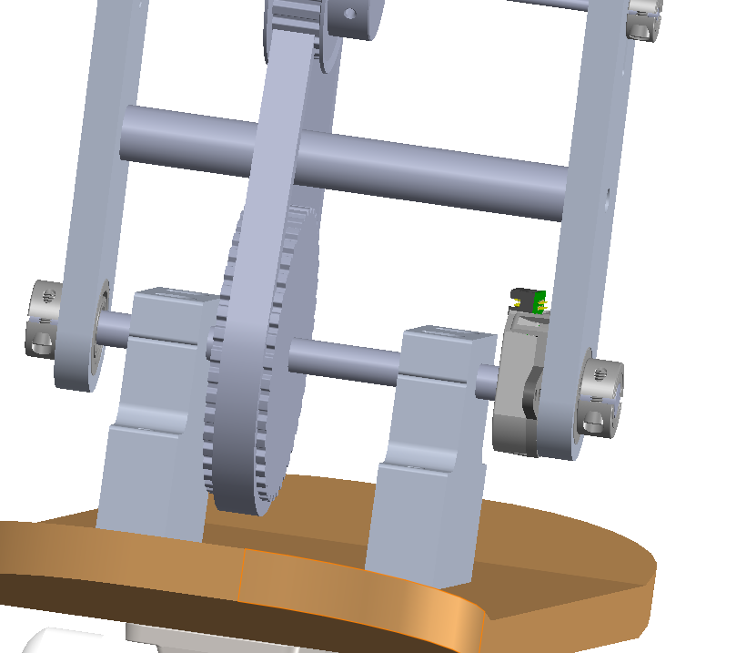
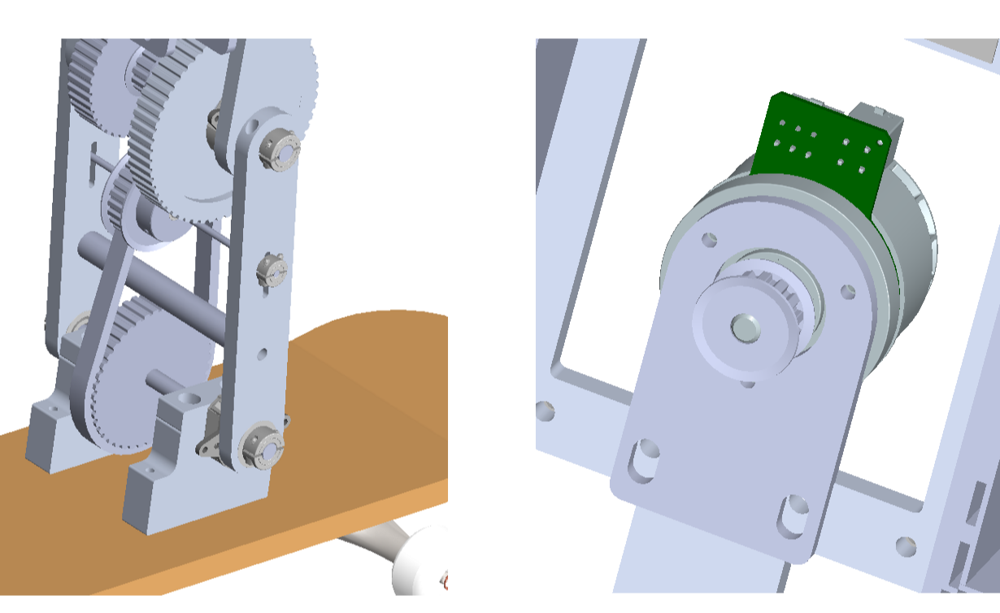
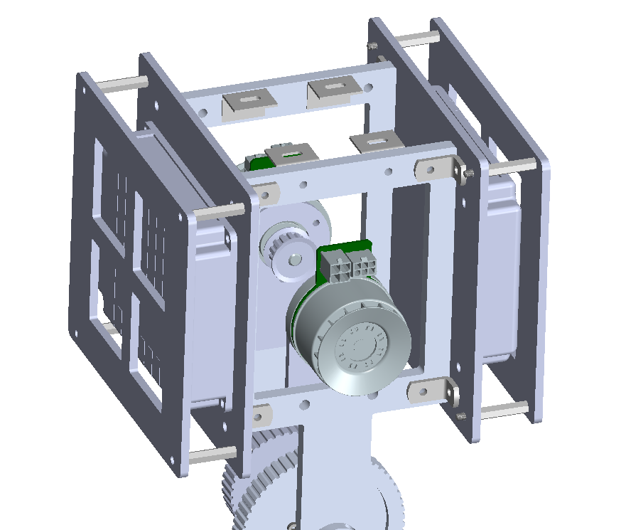
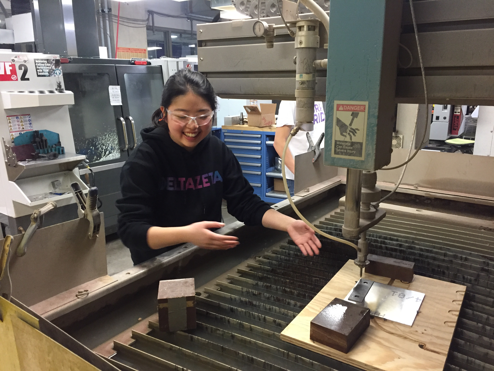

Skateboarding Robot
|
Robot Design Studio / Winter-Spring 2020 |
 |
|---|
|
Robot Design Studio / Winter-Spring 2020 |
|
|---|
Our team was tasked with designing and building a 2-DOF robot that could perform three skateboarding tricks: drop-in, stall, and manual. As the drop-in and stall tricks are done together on a half-pipe, this also involved "pumping", where a skateboarder lowers their center of gravity on the way down the half-pipe to maximize gravitational potential energy, like this:

This gif is not on a half-pipe, but the skateboarder above pumps in the same way. After a skateboarder drops in from one end of the half-pipe, they would pump on the way down to gain kinetic energy, and use that extra energy to help them get to the other lip to stall, where they briefly shift their center of mass towards the back to hang on to the lip for a second.

After researching these skateboarding tricks, we were able to establish that virtually all skateboarding tricks could be performed simply by moving the center of mass. We explored various designs that could work with a 10kg-rated children's skateboard: the inverted double pendulum, the "metronome", and the five-bar linkage, among many others.
Due to the range of motion required by some tricks, in addition to the relative simplicity in the mechanical design and control, we ultimately decided to use the inverted double pendulum as our design.
We found the pumping stage to be when our peak acceleration and hence our peak torque for our
motors occurred. Since our end-effector was to heavily affect the center of mass, we decided to
mount our motors, amplifiers and all other heavy components at the top of the double pendulum.
During our research process we found that pumping is performed mostly to compensate for the energy
lost due to friction. We experimentally found the friction coefficient of our skateboard and used
the dimensions of the half-pipe to calculate how high our robot had to raise the end
effector by in how much time. We used this velocity to calculate our necessary power and RPM, and
used a velocity-time curve to determine our peak acceleration -- which, in conjunction with other
determined masses and lengths helped us find peak torques for both motors.
 This was a rather iterative process, as we could not choose our motors and amplifiers without
determining the desired end-effector mass, and vice versa. Eventually we determined that our end-effector
mass was 4kg, which helped select our motors, transmission, and amplifiers. Due to the high torque requirement and
small width requirement of our robot, we decided on belt drives for both our pendulum arms.
This was a rather iterative process, as we could not choose our motors and amplifiers without
determining the desired end-effector mass, and vice versa. Eventually we determined that our end-effector
mass was 4kg, which helped select our motors, transmission, and amplifiers. Due to the high torque requirement and
small width requirement of our robot, we decided on belt drives for both our pendulum arms.
The biggest challenge in our mechanical design process has been in keeping our robot as compact as
possible width-wise. The skateboard is only 15cm wide, and going beyond that width would mean risking the safety of
our components, especially in the testing phase. One key feature of our design is in mounting our motors at the top of our
robot in order to increase the mass at our end-effector and decrease mass at the base of the skateboard. To do
so, we used a 9:1 belt drive system for our bottom "shoulder" joint and a 4:1 belt drive for our upper "elbow"
joint.
Although width was a major constraint, we realized throughout the process that placing the pulleys outside of the arms would not only increases stresses due to cantilevering, but also increase the risk of gears hitting the ground while testing. Therefore, we had to troubleshoot many issues in fitting all the pulleys and the encoders, which had to be placed at the joints instead of the motors due to the risk of the belts skipping teeth. One of the ways we tackled this was by choosing the cut the hubs off of our pulleys.
Another issue we tackled, especially due to our 9:1 belt drive ratio, was in figuring out how to tense each belt. For our top arm, we were able to deal with this by cutting slots in our motor plate, which would allow the motor to move up and down to tense the upper belts. For the bottom arm, we added an idler pulley on a slot to help tension our lower belt.
In addition to designing the mechanical transmissions, we designed protective frames for the two amplifiers. In order to dissipate the heat from the amplifiers effectively, we are mounting them on separate metal plates, facing outwards. Because of this, a plate with large cutouts is placed slightly above each amplifier, to allow heat to dissipate but to also provide protection. Four standoffs hold the upper plate in place in addition to providing lateral protection for each amplifier.
Currently, we are in the building phase of our project. We are cutting all parts with a water-jet, and using the mill and lathe for certain holes and shafts with finer tolerances. On the mechanical side, we are working on a space for the project box, which will house the batteries and the PCBs with our microcontroller unit. On the power-level systems, we are working on getting our motors up and running!
